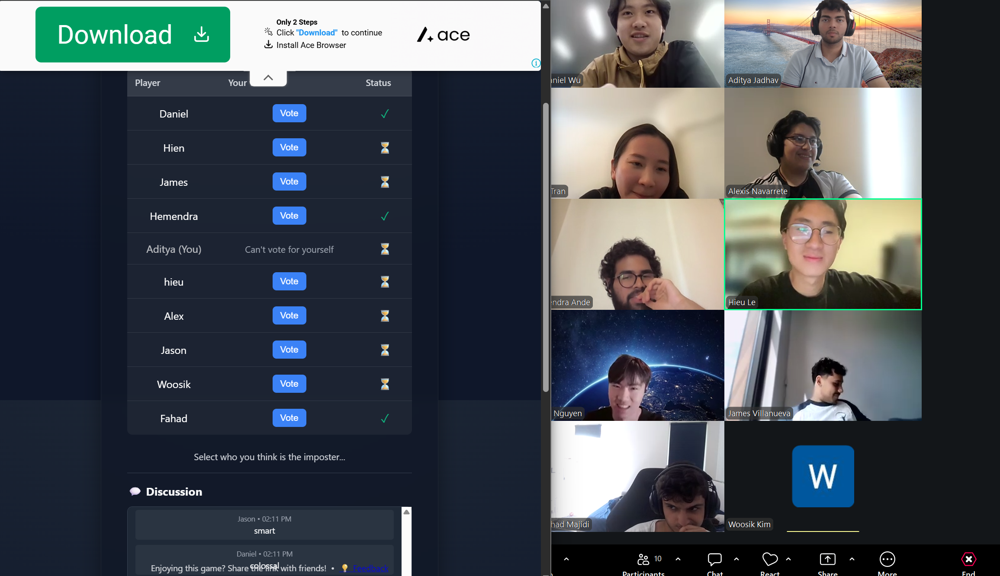

Attendance List
- Woosik Kim
Agenda
- Introduce the app idea
- Talk about possible features
- Discuss team roles
Unfinished Business
We still need to decide the final design of the timer screen.
New Business
The team talked about making a simple timer app for students. We want it to be easy to use and helpful.
We also discussed adding study statistics and custom break reminders.
This is a small extra note for the meeting page.
Extra idea
One idea was to let users choose their own timer length.
Miscellaneous Comments / Questions / Concerns
Should we make the app mobile-friendly first?
Do we want different sound options?
Should users be able to save their settings?
Pictures and Recordings
image:

Audio recording:
Video recording: